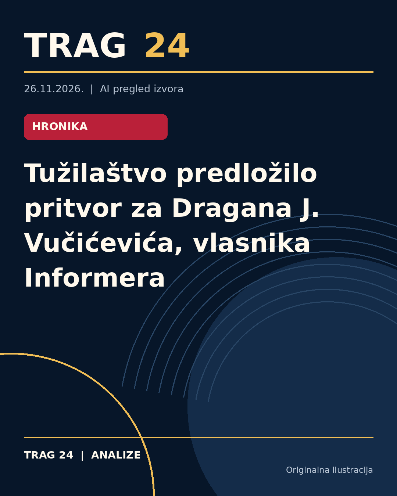

Tužilaštvo predložilo pritvor za Dragana J. Vučićevića, vlasnika Informera

ŠTA SE DOGODILO
Drugo osnovno javno tužilaštvo u Beogradu podnelo je sudu predlog za određivanje pritvora Draganu J. Vučićeviću, vlasniku i glavnom uredniku televizije Informer. Vučićević je prethodno saslušan u svojstvu osumnjičenog i izneo je odbranu, negirajući krivična dela koja mu se stavljaju na teret. On je uhapšen ispred zgrade televizije Informer po nalogu tužilaštva.
HRONOLOGIJA
Hapšenje Dragana J. Vučićevića dogodilo se neposredno pre njegovog saslušanja u tužilaštvu. Saslušanje je trajalo oko tri i po sata, nakon čega je tužilaštvo saopštilo da postoji opasnost da bi on mogao da ponovi krivično delo, zbog čega je predložen pritvor. Njegovo zadržavanje potvrđeno je od strane Policijske stanice Voždovac. Navodi o hapšenju i pritvoru stigli su i do Skupštine Srbije, gde su poslanici Srpske napredne stranke (SNS) reagovali na tu vest. Skup simpatizera Vučićevića održan je ispred Palate pravde.
ŠTA NAVODE IZVORI
Izvori navode da je Vučićević osumnjičen za krivična dela ometanje pravde i izazivanje panike i nereda u produženom trajanju, po odredbama Krivičnog zakonika. Njegovi advokati navode da se događaji za koje se tereti odnose na period od pre više od godinu dana i postavljaju pitanje zašto je postupak trajao toliko dugo. Neki izvori ističu i političke konotacije slučaja, dok se porodica i saradnici Vučićevića zalažu za njegovo puštanje.
ŠTA JE POTVRĐENO
Potvrđeno je hapšenje Dragana J. Vučićevića u blizini televizije Informer, njegovo saslušanje u Drugom osnovnom javnom tužilaštvu u Beogradu, kao i podnošenje zahteva za pritvor zbog procene da postoji opasnost da bi mogao ponoviti krivično delo. Takođe, potvrđeno je da mu se na teret stavljaju dva krivična dela: ometanje pravde i izazivanje panike i nereda, uz moguće kazne od zatvora i novčane kazne kako je propisano zakonom.
ŠTA NIJE POTVRĐENO
Nije potvrđeno da li je sud prihvatio predlog za pritvor niti kakva će biti pravna odluka u ovom predmetu. Nisu potvrđene konkretne okolnosti koje bi ukazivale na ponavljanje krivičnih dela ili dodatne detalje vezane za navode o političkom pritisku i motivima postupka. Takođe, nema potvrda o daljim zvaničnim reakcijama drugih državnih organa ili nezavisnih tela.
ŠTA OSTАJE OTVORENO: Ostaje nepoznato kako će sud odlučiti o pritvoru Dragana J. Vučićevića i kakav će biti dalji tok postupka. Takođe, ostaje otvoreno tumačenje uticaja političkog konteksta na ovaj slučaj i efikasnost nadzornih mehanizama u postupku. Nije jasno ni na koji način će se odvijati odbrana u daljoj pravnoj proceduri, kao ni da li će biti novih javnih ili pravnih poteza u vezi sa ovim predmetom.
Izvori
- https://vreme.com/vesti/drugo-osnovno-javno-tuzilastvo-pritvor-dragan-j-vucicevic/
- https://www.nedeljnik.rs/tuzilastvo-predlozilo-pritvor-za-dragana-j-vucicevica/
- https://www.b92.net/info/hronika/288362/tuzilastvo-trazi-pritvor-do-30-dana-za-dragana-j-vucicevica/vest
Ova analiza je pripremljena uz pomoć veštačke inteligencije na osnovu javno dostupnih izvora. Navodi izvora nisu nužno nezavisno potvrđeni.